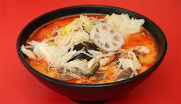

돌아가기
마라탕

마라탕이란?
'마라'라는 얼얼한 맛을 내는 중국 향신료를 이용해 만든다. 마라는 얼얼할 마(麻), 매울 랄(辣) 이라는 뜻으로,
맵고 얼얼한 탕 요리이다. 마라탕의 혀가 얼얼하게 마비되는 듯한 느낌은 화자오가 들어가기 때문이다.
조리준비
>>자세한 조리영상<<
준비물
- 중국당면
- 알배추
- 청경채
- 건두부
- 대파
- 소고기
- 목이버섯
- 팽이버섯
- 사골곰탕육수
- 마라소스
- ...등등 자신의 취향에 맞게 추가하면 된다
(사실 준비물이 많이 필요함으로 마라탕집에 가서 먹는걸 추천한다.)
조리시작
- 먼저 청경채를 잘라서 씻어주고,건두부도 먹을만큼 면처럼 썰어주세요!
- 달궈진 팬에 기름을 두르고 대파로 파기름을 낸 뒤 시판용 마라소스를 넣고 으깨주세요!
- 사골곰탕육수 한 팩과 물을 넣고 팔팔 끓여주세요
- 국물이 충분히 베일 수 있게 건두부를 먼저 넣어주세요!
- 청경채, 목이버섯, 팽이버섯도 넣어주세요.
- 약불에 살짝 올려두고 소고기 핏물을 뺀 뒤, 먹기좋게 썰어주세요!
- 썰어놓은 소고기를 넣고 푹 끓여주면 됩니다
- 그릇에 담아내고 고수 좋아하시는 분은 먹을만큼 고수를 올려주면 완성이예요!
우유급식 신청자
| / |
이름 |
반 |
번호 |
브랜드 |
신청개월 |
| 신청자 |
신지원 |
2반 |
7번 |
서울우유 |
4개월 |
| 고영이 |
4반 |
27번 |
남양유업 |
8개월 |
| 갱얼쥐 |
6반 |
40번 |
덴마크우유 |
8개월 |
| 함스더 |
7반 |
5번 |
소와나무 |
1개월 |
| 안무새 |
8반 |
16번 |
매일유업 |
3개월 |